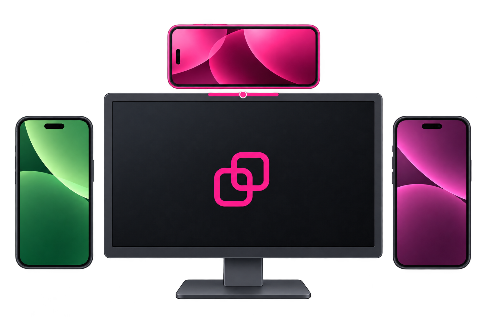
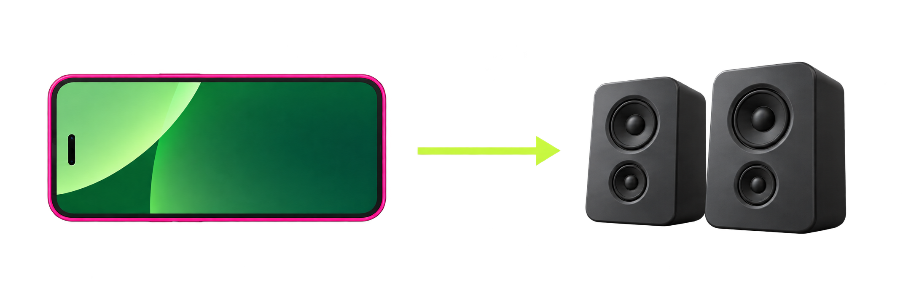
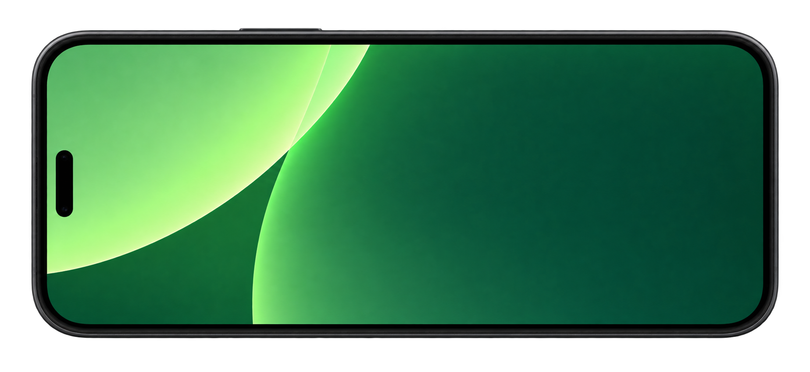
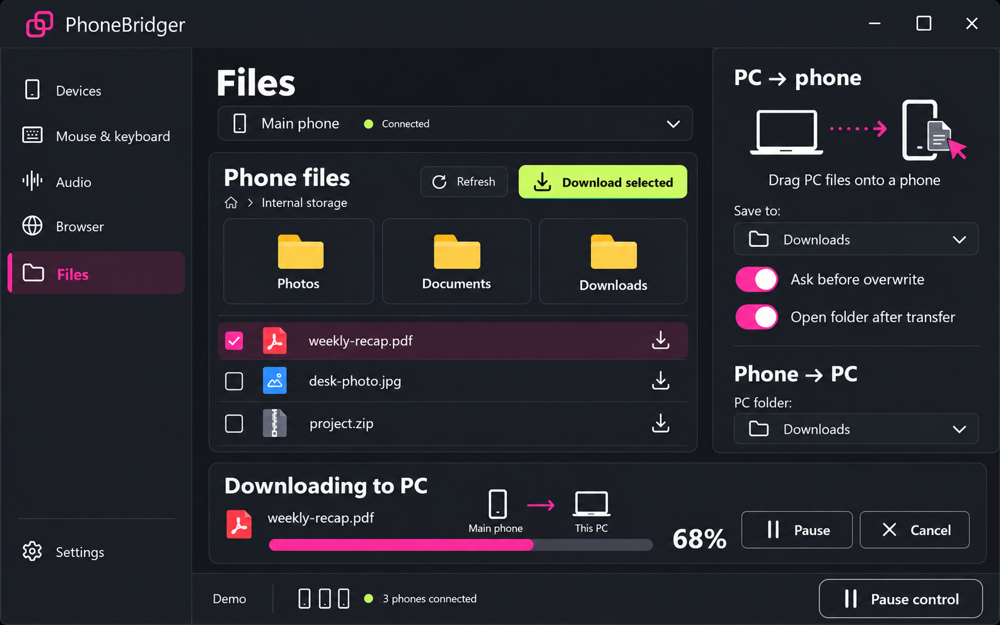

Mouse & keyboard
Use PC keyboard
Return to PCCtrl + Alt + S
Approved concept style · local demonstration controls



Demo controls change local preview state only.

Design concept. Phone files belong to the selected phone; downloads go to PC. PC files are dragged onto a phone.